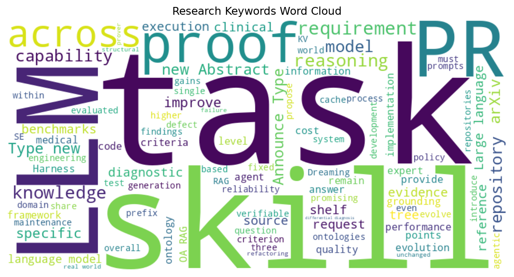

Hui Yang, Jiaoyan Chen, Yongsheng Gao
Thu,
arXiv:2610.36335v1 Announce Type: new Abstract: Large language models (LLMs) perform well across many real-world tasks but remain prone to hallucination, limiting their reliability in domains such as...
Roxana Ramona Szomiu, George Ursu, Adrian Groza
Thu,
arXiv:2610.36325v1 Announce Type: new Abstract: Effective differential diagnosis depends on well structured and unambiguous patient case descriptions, since incomplete or ambiguous clinical informati...
Weidong Tang, Ruiheng Wang, Jingxuan Zhang, Hexin Wang, Haoyuan Chen, Zhengfeiyang Zhang, Yixing Ma, Zichen Jiang, Ziyu Guo, Haodong Li, Zhengbo Jiao, Zhiqing Cui, Xinxiang Yin, Shuo Liang, Zhenglin Wan, Hongzhan Lin, Wangbo Zhao Kaipeng Zhang, Pengfei Zhou, Odin Zhang, Yang You
Thu,
arXiv:2610.36077v1 Announce Type: new Abstract: Multimodal intelligence can be viewed as human-guided co-evolution between worlds and agents through interaction. However, scaling this process faces t...
Xinyuan Song, Hasibul Haque, Jay Somasundaram, Ryan Turner, Bowen Zhu, Liang Zhao
Thu,
arXiv:2610.36188v1 Announce Type: new Abstract: Large language model (LLM) agents increasingly rely on reusable skills for complex software engineering tasks, making skill libraries essential for rep...
Jannatul Shefa, Alejandro Salado, Paul Wach, Taylan G. Topcu
Thu,
arXiv:2610.36234v1 Announce Type: new Abstract: Requirements engineering (RE) is foundational to systems engineering (SE), as requirement defects can propagate downstream and adversely affect develop...
Suhas Kumar Morisetty, Vaibhavi Lokegaonkar, Sachin Mathew Varghese, Wesley Harris
Thu,
arXiv:2610.36355v1 Announce Type: new Abstract: Prefix caching enables a Large Language Model (LLM) servers to reuse the Key-Value (KV) states and accelerate prefill computation stage for requests th...
Aravind Mandiga, Guoming Li
Thu,
arXiv:2610.36328v1 Announce Type: new Abstract: Benchmarks for verifiable code generation usually test a proof against one fixed implementation. We ask whether the same proof remains valid after a pr...
